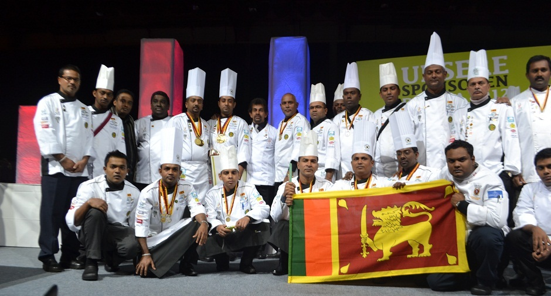

Image Gallery |
||
Culinary Olympics

The Culinary Olympics, held for the first time in 1900, takes place every four years. The team of 24, experienced as well as amateur chefs from around the country was selected and given intense training over the past year, Read More |
||
|
|
Culinary Art 2013Culinary art is the art of cooking. Culinary artists are responsible for skillfully preparing meals that are as pleasing to the palate as to the eye. Increasingly they are required to possess a knowledge of the science of food and an understanding of diet and nutrition. Read More |